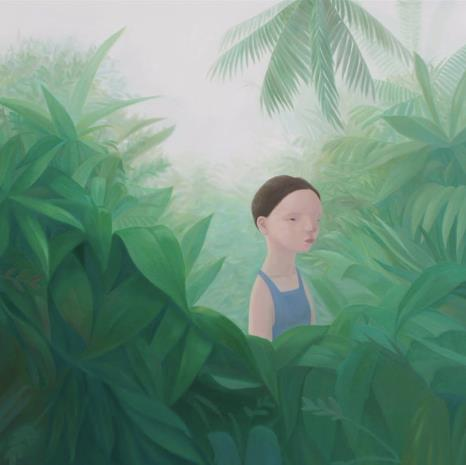
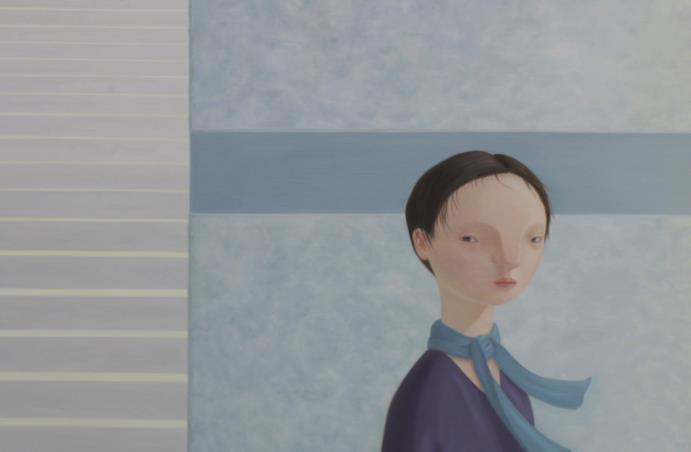

천유경
무엇을
>>사람
어떻게
>>무표정으로, 그리고 부드러운 색감과 파스텔 계통의 색들로 그림. 풍경은 온화하고 사람은 빛을 쬐고 있다.
왜
>> 배경은 나아가야 할 방향이나 과정, 고민을 통해 희망을 말하고자 했다. 어두운 숲속에서 빛을 따라 앞으로 나아가는, 즉 해답을 찾거나 원하는 어떤 곳에 가기 위함, 원하는 것을 이루기 위함이라는 뜻을 가진다. 대부분 작품의 빛은 이와 비슷한 의미로 이미지화 되었다.

-천유경_담다-가까이 2, 112.1*112.1cm, oil on canvas, 2016

-천유경_담다-기로 2, 90.9*60.6cm, oil on canvas, 2016